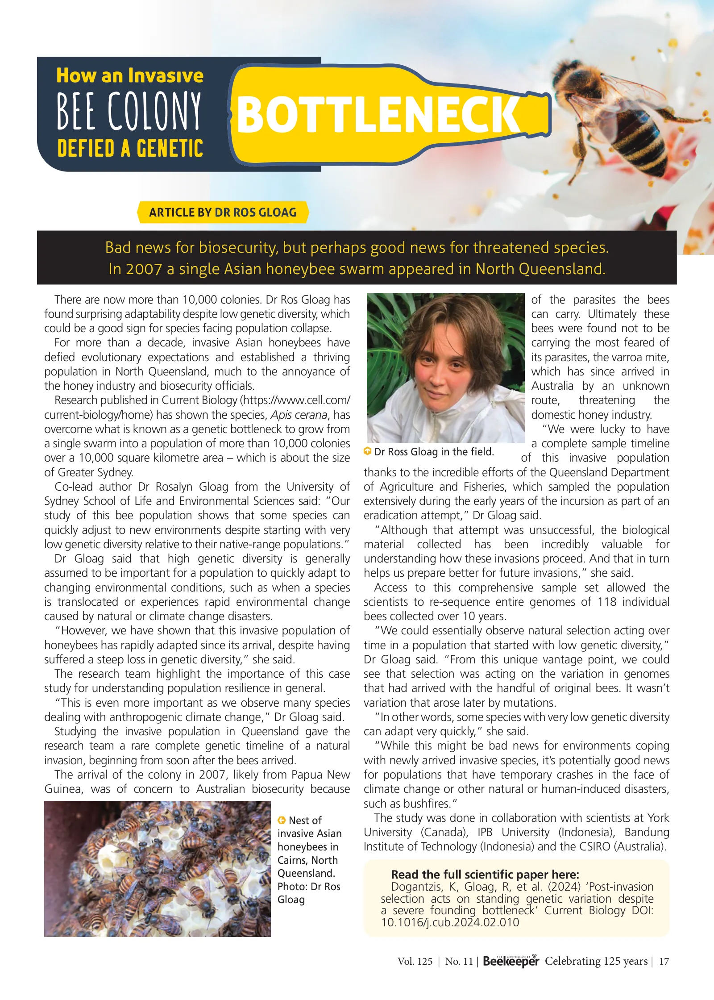

of the parasites the bees
can carry. Ultimately these
bees were found not to be
carrying the most feared of
its parasites, the varroa mite,
which has since arrived in
Australia by an unknown
route,
threatening
the
domestic honey industry.
“We were lucky to have
a complete sample timeline
of this invasive population
thanks to the incredible efforts of the Queensland Department
of Agriculture and Fisheries, which sampled the population
extensively during the early years of the incursion as part of an
eradication attempt,” Dr Gloag said.
“Although that attempt was unsuccessful, the biological
material collected has been incredibly valuable for
understanding how these invasions proceed. And that in turn
helps us prepare better for future invasions,” she said.
Access to this comprehensive sample set allowed the
scientists to re-sequence entire genomes of 118 individual
bees collected over 10 years.
“We could essentially observe natural selection acting over
time in a population that started with low genetic diversity,”
Dr Gloag said. “From this unique vantage point, we could
see that selection was acting on the variation in genomes
that had arrived with the handful of original bees. It wasn’t
variation that arose later by mutations.
“In other words, some species with very low genetic diversity
can adapt very quickly,” she said.
“While this might be bad news for environments coping
with newly arrived invasive species, it’s potentially good news
for populations that have temporary crashes in the face of
climate change or other natural or human-induced disasters,
such as bushfires.”
The study was done in collaboration with scientists at York
University (Canada), IPB University (Indonesia), Bandung
Institute of Technology (Indonesia) and the CSIRO (Australia).
There are now more than 10,000 colonies. Dr Ros Gloag has
found surprising adaptability despite low genetic diversity, which
could be a good sign for species facing population collapse.
For more than a decade, invasive Asian honeybees have
defied evolutionary expectations and established a thriving
population in North Queensland, much to the annoyance of
the honey industry and biosecurity officials.
Research published in Current Biology (https://www.cell.com/
current-biology/home) has shown the species, Apis cerana, has
overcome what is known as a genetic bottleneck to grow from
a single swarm into a population of more than 10,000 colonies
over a 10,000 square kilometre area – which is about the size
of Greater Sydney.
Co-lead author Dr Rosalyn Gloag from the University of
Sydney School of Life and Environmental Sciences said: “Our
study of this bee population shows that some species can
quickly adjust to new environments despite starting with very
low genetic diversity relative to their native-range populations.”
Dr Gloag said that high genetic diversity is generally
assumed to be important for a population to quickly adapt to
changing environmental conditions, such as when a species
is translocated or experiences rapid environmental change
caused by natural or climate change disasters.
“However, we have shown that this invasive population of
honeybees has rapidly adapted since its arrival, despite having
suffered a steep loss in genetic diversity,” she said.
The research team highlight the importance of this case
study for understanding population resilience in general.
“This is even more important as we observe many species
dealing with anthropogenic climate change,” Dr Gloag said.
Studying the invasive population in Queensland gave the
research team a rare complete genetic timeline of a natural
invasion, beginning from soon after the bees arrived.
The arrival of the colony in 2007, likely from Papua New
Guinea, was of concern to Australian biosecurity because
ARTICLE BY DR ROS GLOAG
Nest of
invasive Asian
honeybees in
Cairns, North
Queensland.
Photo: Dr Ros
Gloag
Dr Ross Gloag in the field.
Read the full scientific paper here:
Dogantzis, K, Gloag, R, et al. (2024) ‘Post-invasion
selection acts on standing genetic variation despite
a severe founding bottleneck’ Current Biology DOI:
10.1016/j.cub.2024.02.010
Bad news for biosecurity, but perhaps good news for threatened species.
In 2007 a single Asian honeybee swarm appeared in North Queensland.
Vol. 125 | No. 11 |
Celebrating 125 years | 17